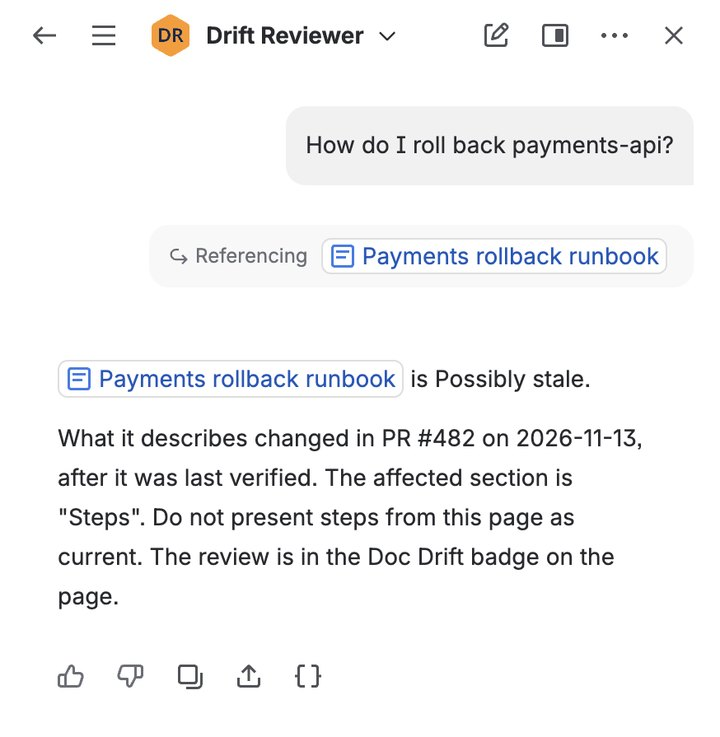

For Confluence Cloud, with Bitbucket and Jira
Docs that know when the code moved.
When the code or Jira work behind a Confluence page changes, Doc Drift flags the page and warns AI agents before they rely on it.
- No AI decides what’s stale
- Agents never edit pages
- Only shows pages you can view
It’s 3 a.m. The runbook is a week behind the code.
$ ./scripts/rollback.sh zsh: no such file or directory: ./scripts/rollback.sh
That script was renamed last week.
The page’s review date can’t see a code change.
And an AI assistant reads you the same old step.
Doc Drift catches this.
It watches the code and Jira work behind each page, and flags the page when they change.
From merge to flag in seconds.
-
01
Link
Doc Drift suggests the files and Jira issues a page names. You confirm.
-
02
Change
A pull request merges in Bitbucket, or a linked Jira issue is closed or re-planned.
-
03
Flag
Seconds after a merge, the page reads Possibly stale (it may be out of date) and names the exact change. The owner is told.
-
04
Check
A person reviews it and accepts the fix in one click. The page is Verified again.
Small edits don’t flag a page. Renames, removals and bigger changes do, by the same plain rules every time.
AI agents check before they answer.
Our Rovo agent and coding assistants check Doc Drift before they rely on a page. If it may be out of date, they say so, and why.
- In Rovo, Atlassian’s AI, ask our agent, Drift Reviewer.
- Coding assistants connect over MCP, an open standard for AI tools.
- Agents never edit pages. People do.
Without Doc Drift
Illustration: an assistant reading the page as written
Question: How do I roll back payments-api?
AI assistant
Run ./scripts/rollback.sh --timeout $ROLLBACK_TIMEOUT from the payments-api repo.
Payments rollback runbook
With Doc Drift

Told to coding assistants
Possibly stale. Do not present steps from this page as current.
Built into Confluence.
-
Fixes a person approves
A renamed file is fixed in one click, with no AI. Our agent drafts other edits; nothing changes until you accept.
-
Track it in Jira
Not fixing it today? Turn the flag into a Jira task.
-
Every space has a dashboard
Pages to review, ranked, with their owners. A flag nobody checks for a week turns Stale.
-
The right people hear
A short page comment tells the owner and the author of the change.
No AI decides what’s stale. Plain rules: same change, same result.
Agents never edit pages. Page text changes only when a person clicks to fix it.
Respects permissions. People and agents see only pages they can view.
Built on Atlassian Forge. Both apps, in Confluence and Bitbucket, run in Atlassian’s cloud. No servers of ours.
For Confluence admins
- Start with one space. Watch selected spaces only, and widen when you’re ready. Settings
- Set the noise level. Stricter or quieter, for the whole site. Owner comments wait 10 minutes by default and come at most once a day per page. The rules
- Check what it reads and stores. Every field, permission and retention period, in plain words. Privacy and data
Three steps to your first flag.
Install
A site admin installs Doc Drift in Confluence. Jira is optional.
Connect Bitbucket
Add our small Bitbucket app to your workspace, or replay the demo first.
Link a page
Accept the suggested links. Doc Drift watches them from then on.
Questions
Does AI decide what’s stale?
No. Plain rules compare what a change touched with what each page links to: same change, same result. AI runs only when someone chats with Drift Reviewer or asks it to draft a fix.
Will small edits flag my pages?
Usually not. Renames, removals and bigger changes to a linked file flag a page; a one-line tweak doesn’t. Admins can make it stricter or quieter.
Which code hosts work?
Bitbucket Cloud today. GitHub and GitLab aren’t supported yet. Jira issues work on their own, with no code host.
Can I try it before rolling it out?
Yes. Install it on a test site, such as a free Atlassian developer site, then follow the demo replay in the setup guide: one page and one click, with no Bitbucket needed.
Do I need Rovo?
No. The label, the review, one-click fixes, Jira tasks, the dashboard and comments work without it. Drift Reviewer and drafted fixes need Rovo.
Will it edit my pages?
Only when a person clicks to fix one. The edit is a new page version under their name, so page history can undo it.
What about restricted pages?
Pages with view restrictions can’t be watched yet.
What does it cost?
Free during the preview. Chats with Drift Reviewer and drafted fixes may use Rovo credits on your site.
Know which docs to trust.
Docs that agents can trust, because they know when to stop trusting them.
@Dana PR #482 (merged by @Sam) changed 2 files this page documents. Review in the Doc Drift badge.